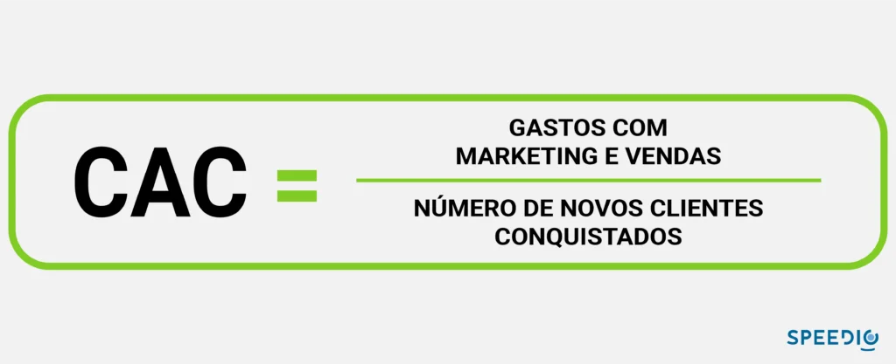
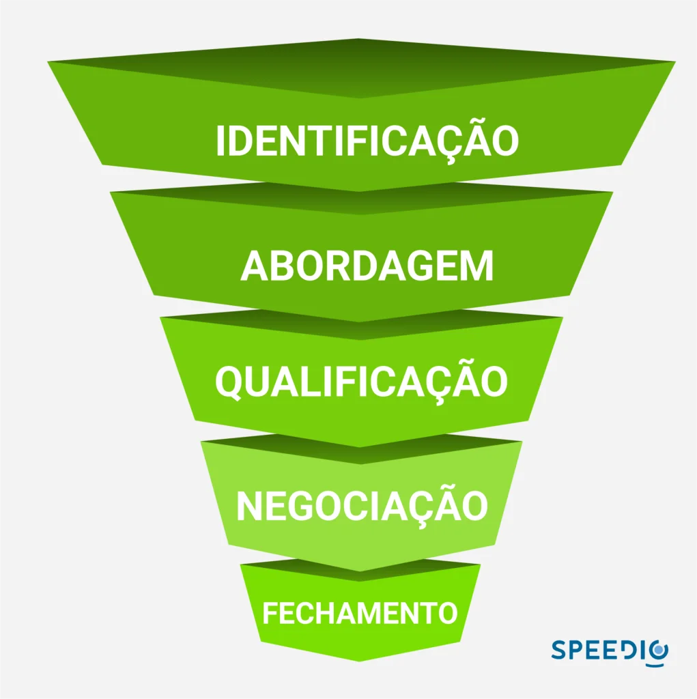

Artigos da Categoria
Como usar outbound para baixar o CAC no B2B?
Neste post você verá
O outbound tem forte influência no custo de aquisição de clientes (CAC). Saiba o que é necessário para utilizar ao seu favor.
Precisamos falar sobre custos. Mas antes uma simples indagação: Sua empresa está vendendo bem e obtendo lucros?
Independentemente da sua resposta, saiba que você pode até estar vendendo bem, mas não lucrando tudo o que pode. O motivo? Seu CAC pode estar muito alto.
O que é o custo de aquisição de clientes ? (CAC)
Antes de entrarmos mais a fundo no assunto, precisamos entender como funciona essa métrica que irá avaliar a saúde financeira da sua empresa. A aquisição de clientes é custosa, e todas as estratégias de marketing digital e vendas entram nessa conta.
O inbound marketing é um dos grandes responsáveis por essa conta vir alta, já que é gasto muito recurso financeiro para atrair clientes em potencial, que vão passar por todo o processo do funil de vendas e que em muitos casos não fazem nem parte do seu perfil de cliente ideal, o que atrapalha o seu processo de vendas.
Além disso, o inbound é causador da perda de outro grande recurso: o tempo. Ao tentar prospectar novos clientes que não fazem parte do seu ICP, você gasta recurso humano e essa conta também entra no CAC. Afinal, um colaborador da sua empresa está tentando vender algo para alguém que pode não estar interessado, ao invés de vender para quem realmente faz parte do seu público.
De uma forma mais direta, entra no cálculo do CAC todo e qualquer esforço que você faz para conquistar um cliente. De ferramentas de CRM a colaboradores, sejam das áreas de marketing ou vendas. Inclusive investimentos em tráfego pago nas redes sociais e Google, que estão cada vez mais disputados.
Como calcular o CAC?
Como falamos anteriormente, todo valor investido que impacte diretamente na aquisição de um cliente deve entrar na conta. Para um melhor monitoramento da saúde financeira da sua empresa, essa métrica deve ser calculada mês a mês.
Essa é uma forma de avaliar se o desempenho da empresa em tempo real para que decisões estratégicas sejam tomadas. Está funcionando? Pode ser melhorado?
Por exemplo, a sua empresa vende um serviço de assinatura mensal e o custo para conseguir aquele cliente ficou igual ao de 3 mensalidades. Acontece que o cliente cancelou a assinatura após apenas um mês de uso, o que torna um grande prejuízo.
O cálculo do CAC é realizado da seguinte forma: é somado todo valor investido (marketing e vendas) e logo em seguida é realizada a divisão pelo número de novos clientes, como na imagem abaixo.

Em um exemplo prático, sua empresa gastou aproximadamente R$10.000,00 com toda a operação e conquistou 200 clientes ao longo do mês. Logo, essa empresa gastou R$50,00 para conquistar cada cliente. O valor do CAC ser alto ou baixo vai depender do serviço ou do produto que você estará vendendo.
Agora, vem outra questão, se no inbound os gastos acabam sendo maiores, o que fazer para conseguir clientes? A resposta é muito simples: através da prospecção outbound.
Outbound, o que é?
O outbound marketing é uma maneira de realizar a prospecção de clientes de forma ativa. ao invés de esperar que qualquer lead caia na sua rede, você vai atrás de possíveis clientes que façam parte do seu ICP. Por se tratar de uma estratégia mais agressiva, os resultados obtidos das vendas outbound costumam ser muito bons.
Como prospectar no outbound sales?
Uma coisa fica muito explícita quando falamos sobre estratégias de outbound: você é quem vai atrás do lead. Isso é um fato. Mas onde está esse lead? A seguir daremos os passos para que você possa encontrar o cliente que você tanto busca para a sua empresa e comece a prospectar ativamente.
Desenhe o seu perfil de cliente ideal
De nada adianta conversar com quem não tem interesse no que você está vendendo. Utilize seus históricos de vendas e estatísticas para definir qual é o seu ICP. Veja quem são os clientes mais engajados, que compram com mais frequência e dão feedbacks que agregam valor. Esses são aqueles que você sempre vai querer por perto.
Segmente seu mercado
Onde você pretende vender seu produto ou serviço? Com a segmentação de mercado você pode definir áreas de atuação, como estado, cidades ou mesmo bairros. Essa segmentação feita de forma geográfica também pode ser definida por regiões, como por exemplo uma empresa que vende guarda-sol e busca regiões praianas.
A segmentação pode ser realizada através do porte das empresas também. Dando outro exemplo, sua empresa pode buscar outras empresas que tenham um determinado faturamento ou empresas que tenham um número específico de funcionários CLT.
Essa é uma maneira de você pegar uma parte do mercado e focar nela para realizar suas negociações B2B.
Utilize tecnologia de big data
Ter a tecnologia como aliada é um passo fundamental para o seu sucesso. Ao definir quem é o ICP e realizar a segmentação de mercado, o próximo passo é conseguir leads, mas não pode ser qualquer lead, eles precisam ser de qualidade, até porque isso vai influenciar diretamente no seu CAC.
Com uma plataforma de big data como da Protocolo Hidra, que é a melhor ferramenta de geração de leads B2B do Brasil, você terá acesso aos melhores dados do mercado. A razão pela qual afirmo isso é muito simples: o big data da Protocolo Hidra passa por atualizações, mas como sabemos que no mundo corporativo as coisas acontecem muito rápido, nosso sistema oferece uma checagem.
Essa checagem vai garantir que o email ou telefone realmente existam e pertençam aquele decisor. Agora quer ver uma coisa extremamente legal? Sim, todos os nossos dados são de origem pública, ou seja, são legais e estão de acordo com a lei, mais especificamente a lei geral de proteção de dados pessoais, a famosa LGPD.
Essa checagem vai garantir uma taxa alta de assertividade, o que vai gerar bons resultados para a equipe comercial e consequentemente para a empresa. Consegue entender a diferença? Uma ferramenta como essa muda o jogo para você na prospecção ativa.

CAC alto, inbound ou outbound marketing?
Agora chegamos a grande questão relacionada ao CAC, qual estratégia é a melhor para que o custo de aquisição por clientes seja menor? Conforme analisamos ao longo do artigo, o outbound leva grande vantagem sobre o inbound em todos os requisitos.
Afinal, o que é mais vantajoso? Buscar o contato com quem tem o perfil do seu consumidor ou esperar que a pessoa te ache, podendo inclusive não fazer parte do seu perfil?
Todo o custo da operação impacta diretamente nessa conta, portanto se você consegue otimizar o processo de vendas o CAC automaticamente será baixo. Como vimos anteriormente, com o outbound o crescimento das empresas é mais acelerado justamente por esse motivo, maior assertividade nas negociações.
Tendo as ferramentas corretas, realizar a prospecção ativa vai baixar o CAC da sua empresa e consequentemente melhorar outras métricas como o ROI e o LTV, por exemplo. Quanto maior a qualidade do lead, mais tempo ele ficará com você.
Essa qualidade é muito importante. Lembra do que falamos sobre o cliente assinar o produto e cancelar no mês seguinte? Pois é, são esses que queremos evitar e são exatamente esses que o inbound acaba proporcionando, ao contrário da nossa amada prospecção ativa.
para sua empresa